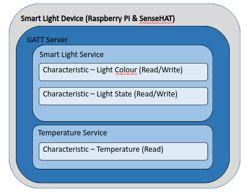
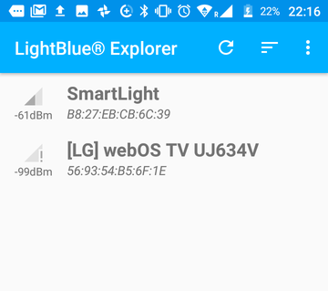
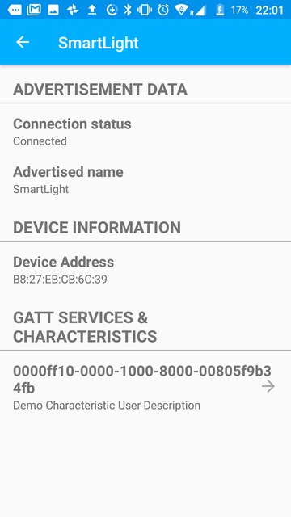
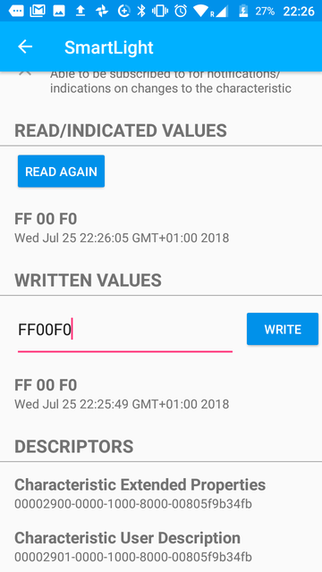
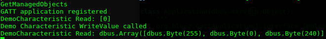
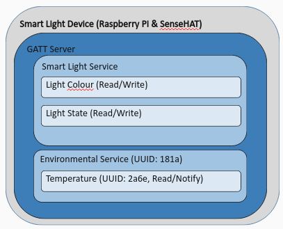
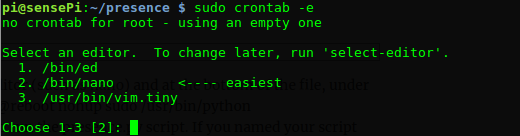

Bluez · Smartphone · Raspberry Pi · SenseHAT
In this lab you will use Bluetooth Low Energy (BLE) and a Raspberry Pi/SenseHAT to build a "smart lightbulb".
Your RPi has a built in Bluetooth protocol implementation called Bluez. However, as you will be creating a Bluetooth Low Energy service, it's a good idea to download, compile, install, and configure the latest stable version of Bluez on the Raspberry Pi.
Your BLE service will require a few additional libraries on the RPi. Update the package list on your RPi and install these dependencies as follows:
$ sudo apt-get update
$ sudo apt-get install libdbus-1-dev libglib2.0-dev libudev-dev libical-dev libreadline-dev -yYou'll have to wait a short while for the dependencies to install.
Open a command prompt on your RPi and check the BlueZ Version you have currently on your RPi:
$ bluetoothctl -vYou should see a reasonably current version (probably 5.43). If it's already 5.50 or greater then that's fine and you can move to the next section of the exercise.
Download the BlueZ 5.50 source code on to your RPi using the wget command. Make sure your RPi has an internet connection.
$ wget www.kernel.org/pub/linux/bluetooth/bluez-5.50.tar.xzUncompress the downloaded file using the tar command and change directory to the new uncompressed directory:
$ tar xvf bluez-5.50.tar.xz && cd bluez-5.50To install Bluez, you need to follow the standard configure-make-install process for most Linux software packages:
./configure --prefix=/usr --mandir=/usr/share/man --sysconfdir=/etc --localstatedir=/var --enable-experimentalOnce the configure script has successfully run you can compile the Bluez code. This compilation will take about 10 minutes. Compile the code by running the make command:
make -j4After Bluez has been compiled it can be installed on the RPi by running the following command:
sudo make installIf all the above runs without any difficulty then you've updated your Bluetooth stack to Bluez 5.50. Now reboot the RPi for it to fully take effect.
sudo rebootVerify the BlueZ version by issuing the command below.
$ bluetoothctl -v
bluetoothctl: 5.50sudo apt-get install python-dbusYou will need to download starter code for this lab from an online Git repo. To make this easy, install Git on your RPi by running the following command on the RPi:
sudo apt-get install gitYou will now use the Raspberry Pi to start advertising itself to BLE central devices and expose some data.
The example you will use is similar to some commercial BLE "Smart Light" products on the market at the moment. Typically they are controlled using a smart phone app whereby their colour and state(on/off) can be changed. They can also include other novel features. For example, PlayBulb provide a BLE light that has a built in speaker that pulses and changes colour to match the mood of the music (a party bulb!).
You will now use the 8x8 LED matrix on the RPi to create a Smart light proto type that can be controlled from a Mobile device. It will provide the following functionality:
By adverising temperature, the lightbulb could posiibly be used as part of a smart home climate control system or as an ambient/assisted living device where the colour indicates temperature (blue -> too cold, red -> too hot).
Your RPi can have multiple BLE services. Each BLE service, in turn, can have multiple characteristics. Characteristics can be read-only, read/write, or notify. Our Smart Light will contain 2 services: a SmartLight service and a Temperature service.
The BLE service design you will implement is shown in the following diagram:

The Bluetooth Special interest group (SIG) has agreed specifications for BLE services and characteristics (for example Heart Rate Monitors). To date, there is no specific agreed standard for the light services and colour so we can define our own custom spec. Each service must have its own Universally Unique Identifier (UUID). You can use an online tool GUID Generator to do this. For the purposes of this lab, we will use the following:
UUID_SMART_LIGHT_SRVC = 'FF00'
UUID_LIGHT_COLOUR_CHRC = 'FF01'
UUID_LIGHT_SWITCH = 'FF02'
There is an agreed standard for Temperature characteristics. Based on this, the UUID for temperature will use the short 16 bit UUID defined by the BLuetooth SIG:
UUID_TEMP_SRVC = '2A60'
UUID_TEMP_CHRC = '2A6E'
Before changing anything, lets check if the generic service example runs.
First, change the bluetooth device name permanently to include your name so that it can be identified easily. On the Raspberry Pi, create a file called /etc/machine-info (perhaps use nano /etc/machine-info) and add the following content:
PRETTY_HOSTNAME=YOUR_NAMENext, configure your Bluetooth controller on the RPi to allow BLE advertising. At the command line on the RPi, run the following command to allow both reading and writing to ble services.
sudo hciconfig hci0 leadv 0("leadv" stands for LE Advertising...)
Open a terminal window and make sure you are in your home directory by entering cd ~.
Use Git to clone the starter code for your GATT service. In your home directory, run the following command
~ $ git clone https://github.com/fxwalsh/Bluetooth-Low-Energy-LED-Matrix.gitChange directory to the cloned repository and examine the files in the src directory.
~ $ cd Bl*/src
~/Bluetooth-Low-Energy-LED-Matrix/src $ ls
bluez_components.py gatt-serverbluez_components.py contains "boiler-plate" functions that control the BLE adapter. The gatt-server implements a generic BLE service that we can modify to implement our Smart Light Service.
At the command prompt in the src directory, type sudo ./gatt-server to start the service. Hopefully there are no errors and you see something similar to the following:
pi@sensePi:~/Bluetooth-Low-Energy-LED-Matrix/src $ sudo ./gatt-server
Registering GATT application...
GetManagedObjects
GATT application registeredYour RPi should now be advertising and waiting for a central device to connect to it. You can use a Smart phone app to do this. LightBlue Explorer is a BLE test app that allows you to scan for Bluetooth Low Energy devices and communicate with them. It also is available for both Android and Apple iOS Devices. Go to the App Store on your device and search for it using 'LightBlue' as the search word and install it on your device. The following desciption is using Android version of LightBlue.
To test our RPi Smart Light peripheral, we'll be using LightBlue in Central Mode which allows you to scan and connect to BLE peripherals. Start LightBlue on your device. After some onboarding messages it should start scanning and you should see nearby devices appear on the screen. You can choose a peripheral from a list of nearby devices and explore information about that connected peripheral, its services, and characteristics.

Find the Smart Light peripheral in the list. Tap on the service to connect and you should see the advertisement data for the Demo Service showing just one characteristic.

Tap on the characteristic and, in "Written Values", enter "FF00F0" and hit Write; the screen should show the new value as 0xFF0F.
Hit the Read button and it should return the same value.

If you now check the console output in the RPi where the service is running, you should see output confirming the write and read.

Congratulations, you've just implemented and tested a simple BLE peripheral on a Raspberry Pi. Now we will modify this service to control the LED matrix and read temperature sensor on the SenseHAT.
To stop the GATT server, enter ctrl+c in the RPi console. The console should then return to the command prompt.
Rename the gatt-server script to smartlight-gatt-server.
Using nano or a suitable editor, open the smartlight-gatt-server file. You will see that it contains 3 python classes, DemoService, DemoCharacteristic, and CharacteristicUserDescriptionDescriptor.
You will need a way to access the SenseHAT LEDs and temperature sensor from the SmartLight service. At the top of the smartlight-gatt-server script, add the following to import the SenseHAT package and create the sense object.
from sense_hat import SenseHat
sense = SenseHat()Change the DemoService class to match the Smart Light design as follows:
class SmartLightService(Service):
SVC_UUID = 'FF10'
def __init__(self, bus, index):
Service.__init__(self, bus, index, self.SVC_UUID, True)
self.add_characteristic(LightColourCharacteristic(bus, 0, self))Update the DemoCharacteristic class as follows
__init__ function (i.e. the constructor):class LightColourCharacteristic(Characteristic):
CHRC_UUID = 'FF11'
def __init__(self, bus, index, service):
Characteristic.__init__(
self, bus, index,
self.CHRC_UUID,
['read', 'write', 'writable-auxiliaries'],
service)
self.value = [0,0,0]
sense.clear()
self.add_descriptor(
LightColourUserDescription(bus, 0, self))Whenever a value is received from a connected client, change the colour of the LED matrix to the received value. Find the WriteValue function in the script and change it to the following:
def WriteValue(self, value, options):
print('light Colour WriteValue called')
if len(value)!=3:
raise InvalidValueLengthException()
sense.clear([int(value[0]),int(value[1]),int(value[2])])
self.value = value
print('Finished changing colour!')Finally, change the name of the CharacteristicUserDescriptionDescriptor class and update the value field to a more accurate description of the characteristic:
class LightColourUserDescription(Descriptor):
CUD_UUID = '2901'
def __init__(self, bus, index, characteristic):
self.writable = 'writable-auxiliaries' in characteristic.flags
self.value = array.array('B', b'Smart Light Colour(RGB)')
self.value = self.value.tolist()
Descriptor.__init__(
self, bus, index,
self.CUD_UUID,
['read', 'write'],
characteristic)
...
...Find the main() function in the script. Replace the line that adds the Demo Service (app.add_service(DemoService(bus, 1))) to the following:
app.add_service(SmartLightService(bus, 0))If the example service is still running, stop it using ctrl+c. As before, run the service by entering sudo ./smartlight-gatt-server at the RPi command prompt and connect using LightBlue on your device.
Write "FFFFFF" to the light colour characteristic and you should see the SenseHAT LED matrix light up. Try some other colours to make sure it's working.
Bluetooth can be tricky. When you make changes to your service you may need to stop and start Bluetooth on your device/smartphone.
If you cannot see the service on your device, restart Bluetooth on the RPi and make sure Low Energy Advertising is allowed:
sudo hciconfig hci0 down
sudo hciconfig hci0 up
sudo hciconfig hci0 leadv 0Now you will add another service to the RPi GATT server. The Temperature service will read from the temperature sensor on the SenseHAT and provide both read and notify functionality for the temperature characteristic.
The environment service design is as follows:

The design applies the UUIDs for environment sensing service and temperature characteristic specified by the Bluetooth SIG.
NOTE: ALL THE FOLLOWING CODE SHOULD BE ADDED ABOVE THE main() FUNCTION
Add the following class to the smartlight-gatt-server script:
class EnvironmentService(Service):
ENV_UUID = '181a'
def __init__(self, bus, index):
Service.__init__(self, bus, index, self.ENV_UUID, True)
self.add_characteristic(TemperatureCharacteristic(bus, 0, self))As you can see the service uses the reserved UUID for Environment Sensing services and adds just on characteristic, TemperatureCharacteristic
Add the folowing class to the smartlight-gatt-server script.
class TemperatureCharacteristic(Characteristic):
TEMP_UUID = '2a6e'
def __init__(self, bus, index, service):
Characteristic.__init__(
self, bus, index,
self.TEMP_UUID,
['read', 'notify'],
service)
self.notifying = False
self.temp = temp_sint16(sense.get_temperature())
GObject.timeout_add(1000, self.get_temp)
def notify_temp(self):
if not self.notifying:
return
self.PropertiesChanged(
GATT_CHRC_IFACE,
{ 'Value': self.temp }, [])
print('temp notify: ' + repr(self.temp))
return self.notifying
def get_temp(self):
self.temp = temp_sint16(sense.get_temperature())
if not self.notifying:
return True
self.notify_temp()
return True
def ReadValue(self, options):
self.get_temp()
print('temp read: ' + repr(self.temp))
return self.temp
def StartNotify(self):
if self.notifying:
print('Already notifying, nothing to do')
return
self.notifying = True
def StopNotify(self):
if not self.notifying:
print('Not notifying, nothing to do')
return
self.notifying = False
## Utility function to convert temp value to 16 bit int value, preserving 2 decimal places
def temp_sint16(value):
answer = []
value_int16=int(value * 100).to_bytes(2, byteorder='little', signed=True)
for bytes in value_int16:
answer.append(dbus.Byte(bytes))
return answerFinally, add the Environment Service to the application by adding the following line to the main() function:
app.add_service(EnvironmentService(bus, 1))Notice that this characteristic permits notifications and includes StartNotify and StopNotify functions to control notifications sent to a connected device. The service requests the temperature from the SenseHAT every second (1Hz) by using the GObject.timeout_add() function.
Now run the service again. You should now see a new service included for your smartlight device. To read the temperature from the device, do
At the moment, you have to run your GATT service manually on the RPi. Ideally, your script would run automatically when the RPi boots. One way to do this is to edit the Cron Table.
cron is a utility that allows tasks to be automatically run in the background at regular intervals. The Crontab (CRON TABle) is a file which contains the schedule of cron entries to be run and at specified times. The crontab File location varies by operating system however you can easily access it on the RPi using the crontab utility program.
In a terminal window, enter sudo crontab -e at the prompt:

If prompted, follow the instructions and select your favourite editor (default is nano). At the end of the file, add:
@reboot sleep 30 && sudo hciconfig hci0 leadv 0
@reboot sleep 40 && sudo python3 /home/pi/Bluetooth-Low-Energy-LED-Matrix/src/smartlight-gatt-serverThe sleep commands delay the startup of the GATT server long enough for the supporting services on the Pi to start (i.e. Bluetooth service)
Save and exit the Crontab and reboot the RPi by typing sudo reboot at the command prompt.
The BLE device should start advertising in the background on every reboot of the RPi.
hciconfig command in this lab. Investigate and explain how this command could be used to turn the Raspberry Pi into a broadcast-only BLE device. hcitool command can be used to advertise data. Light Switch characteristic in the SmartLight service that turns the LED Matrix on and off. You should consider the following:on and off. If the state is set to off, the LED matrix should be off. If the state is on, the LED matrix should be set to the value of the light colour characteristic (sense.clear(value[0],value[1],value[2])).